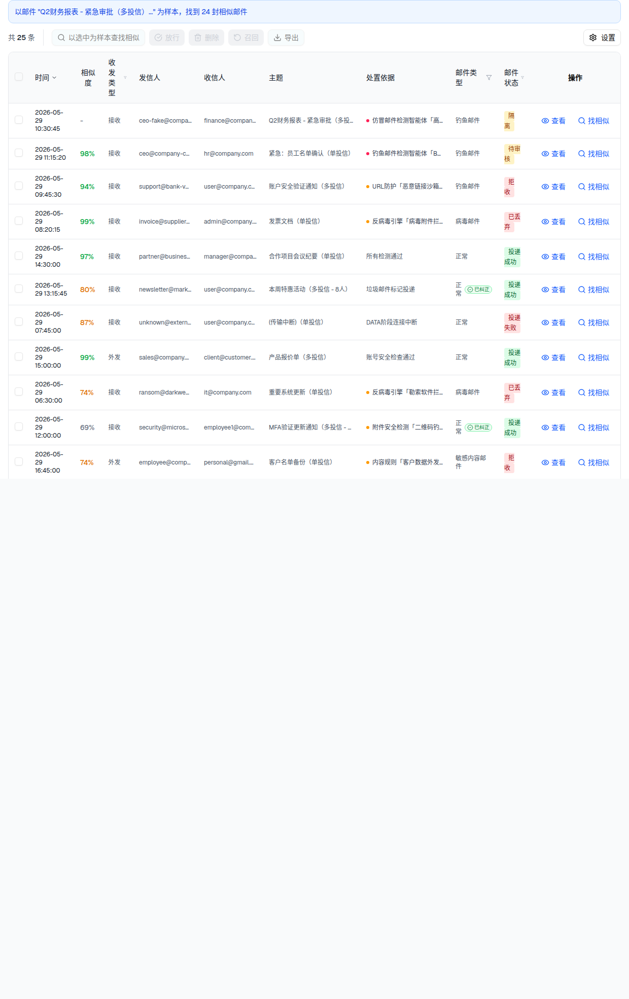

| 属性 | 值 |
|---|---|
| 所属组件 | 2.2 日志表格 InvestigationLogsTable |
| 主文件 | email-handling-disposal-center/index.html |
| 触发路径 | 表格行操作『找相似』→ 显示相似度列 + 顶部样本横幅；同时搜索区进入样本模式（见 L4） |
| 范围说明 | 「规则命中统计」不在本规格范围（见主文件说明块） |
下方内嵌为相似模式表格真实 HTML（含相似度列 + 横幅）。
时间 | 发信人 | 收信人 | 主题 | 处置依据 | 操作 | |||||
|---|---|---|---|---|---|---|---|---|---|---|
| 2026-05-29 10:30:45 | - | 接收 | ceo-fake@company-security.com | finance@company.com, hr@company.com, admin@company.com, user1@company.com, user2@company.com | Q2财务报表 - 紧急审批（多投信） | 仿冒邮件检测智能体「高管仿冒识别」· 判定为身份仿冒 | 钓鱼邮件 | 隔离 | ||
| 2026-05-29 11:15:20 | 98% | 接收 | ceo@company-corp.com | hr@company.com | 紧急：员工名单确认（单投信） | 钓鱼邮件检测智能体「BEC钓鱼识别」· 判定为钓鱼邮件 | 钓鱼邮件 | 待审核 | ||
| 2026-05-29 09:45:30 | 94% | 接收 | support@bank-verify.com | user@company.com, sales@company.com, marketing@company.com | 账户安全验证通知（多投信） | URL防护「恶意链接沙箱检测」· 检测到恶意链接 | 钓鱼邮件 | 拒收 | ||
| 2026-05-29 08:20:15 | 99% | 接收 | invoice@supplier-fake.com | admin@company.com | 发票文档（单投信） | 反病毒引擎「病毒附件拦截」· 发票文档.exe 检出 Trojan.Generic | 病毒邮件 | 已丢弃 | ||
| 2026-05-29 14:30:00 | 97% | 接收 | partner@business.com | manager@company.com | 合作项目会议纪要（单投信） | 所有检测通过 | 正常 | 投递成功 | ||
| 2026-05-29 13:15:45 | 80% | 接收 | newsletter@marketing.com | user@company.com, sales1@company.com, sales2@company.com, marketing@company.com, dev@company.com, ops@company.com, support@company.com, intern@company.com | 本周特惠活动（多投信 - 8人） | 垃圾邮件标记投递 | 正常已纠正 | 投递成功 | ||
| 2026-05-29 07:45:00 | 87% | 接收 | unknown@external.com | user@company.com | (传输中断)（单投信） | DATA阶段连接中断 | 正常 | 投递失败 | ||
| 2026-05-29 15:00:00 | 99% | 外发 | sales@company.com | client@customer.com, partner@vendor.com | 产品报价单（多投信） | 账号安全检查通过 | 正常 | 投递成功 | ||
| 2026-05-29 06:30:00 | 74% | 接收 | ransom@darkweb-mail.com | it@company.com | 重要系统更新（单投信） | 反病毒引擎「勒索软件拦截」· 系统更新.exe 检出 Ransom.WannaCry.A | 病毒邮件 | 已丢弃 | ||
| 2026-05-29 12:00:00 | 69% | 接收 | security@microsoft-verify.com | employee1@company.com, employee2@company.com, employee3@company.com, employee4@company.com | MFA验证更新通知（多投信 - 4人） | 附件安全检测「二维码钓鱼检测」· 检测到二维码 | 正常已纠正 | 投递成功 | ||
| 2026-05-29 16:45:00 | 74% | 外发 | employee@company.com | personal@gmail.com | 客户名单备份（单投信） | 内容规则「客户数据外发管控」· 命中 内容组 | 敏感内容邮件 | 拒收 | ||
| 2026-05-29 17:30:00 | 66% | 接收 | support@vendor-portal.net | procurement@company.com | 供应商门户密码重置（单投信） | 认证与仿冒检测「相似域名仿冒检测」· 发件人格式异常 | 可疑邮件 | 待审核 | ||
| 2026-05-29 18:00:00 | 92% | 外发 | user@company.com | victim1@external.com, victim2@external.com, victim3@external.com, victim4@external.com, victim5@external.com, victim6@external.com, victim7@external.com, victim8@external.com, victim9@external.com, victim10@external.com | 紧急通知（多投信 - 10人） | 发送行为管控「异常批量外发管控」· user@company.com 发信行为异常 | 账号被盗 | 拒收 | ||
| 2026-05-29 19:00:00 | 80% | 接收 | client@customer.com | sales@company.com | Re: 产品报价单（单投信） | 所有检测通过 | 正常 | 投递成功 | ||
| 2026-05-29 20:15:00 | 77% | 接收 | notifications@social-platform.com | user1@company.com, user2@company.com, user3@company.com, user4@company.com, user5@company.com, user6@company.com | 您有新的消息通知（多投信 - 6人） | 灰邮件标记投递 | 广告邮件 | 部分投递成功 | ||
| 2026-06-08 14:23:16 | 71% | 接收 | service@cacter-fake.com | user1@company.com | 您的账户存在异常登录，请立即验证（单投信） | 钓鱼邮件检测智能体「钓鱼邮件智能识别」· 判定为钓鱼邮件 | 钓鱼邮件 | 隔离 | ||
| 2026-06-09 09:12:00 | 61% | 外发 | sales@company.com | external-buyer@outlook.com | Q2 大客户联系人清单 | 内容规则「客户数据外发管控」· 命中 内容组 | 敏感内容邮件 | 拒收 | ||
| 2026-06-09 10:05:00 | 94% | 外发 | hr@company.com | candidate@gmail.com | 在职员工薪资表（误发） | 内容规则「客户数据外发管控」· 命中 正则表达式 | 敏感内容邮件 | 拒收 | ||
| 2026-06-09 11:20:00 | 86% | 接收 | promo@loan-fast.cn | user2@company.com | 无抵押秒批贷款，额度高达50万 | 内容规则「敏感词过滤」· 命中 关键词 | 垃圾邮件 | 拒收 | ||
| 2026-06-09 13:40:00 | 81% | 接收 | news@gambling-site.net | user3@company.com | 在线娱乐城注册即送888 | 内容规则「敏感词过滤」· 命中 关键词组 | 垃圾邮件 | 拒收 | ||
| 2026-06-09 15:02:00 | 90% | 接收 | offer@fake-invoice.biz | finance@company.com | 代开各类正规发票，点数优惠 | 内容规则「敏感词过滤」· 命中 关键词 | 垃圾邮件 | 拒收 | ||
| 2026-06-09 16:18:00 | 76% | 外发 | pm@company.com | blogger@tech-media.com | 内部产品路线图（含未发布代号） | 内容规则「竞品关键词监控」· 命中 关键词组 | 敏感内容邮件 | 待审核 | ||
| 2026-06-10 09:30:00 | 93% | 接收 | billing@paypa1-secure.com | user4@company.com | 您的账单已逾期，请点击处理 | 高级内容过滤「多条件组合策略」· 命中规则 | 钓鱼邮件 | 隔离 | ||
| 2026-06-10 10:48:00 | 67% | 接收 | hr-notice@company-hr.info | user5@company.com | 员工福利更新，请登录确认 | 高级内容过滤「多条件组合策略」· 命中规则 | 钓鱼邮件 | 隔离 | ||
| 2026-06-10 14:15:00 | 67% | 接收 | campaign@bulk-mailer.io | user6@company.com | 限时优惠，点击短链领取 | 高级内容过滤「批量群发短链组合」· 命中规则 | 广告邮件 | 拒收 |

| 元素 | 内容 |
|---|---|
| 样本横幅 | 蓝框：「以邮件 "{主题…}" 为样本，找到 N 封相似邮件」（父级 searchSummary，表内无关闭钮） |
| 相似度列 | 插入在 时间 与 收发类型 之间；{score}% 或 -；≥90 绿/≥70 琥珀/其余灰；表头 Tooltip 解释语义相似 |
| 退出 | 由父级清 showSimilarityColumn（表内无退出控件）；搜索区『清除样本』退出（L4） |
| 比对项 | demo 实际 DOM | 嵌入的 HTML | 一致 |
|---|---|---|---|
| 相似度列 | 相似模式下渲染 | 已包含 | ✅ |
| 样本横幅 | 「…为样本，找到 24 封相似邮件」 | 一致 | ✅ |
| 列插入位置 | 时间→相似度→收发类型 | 一致 | ✅ |